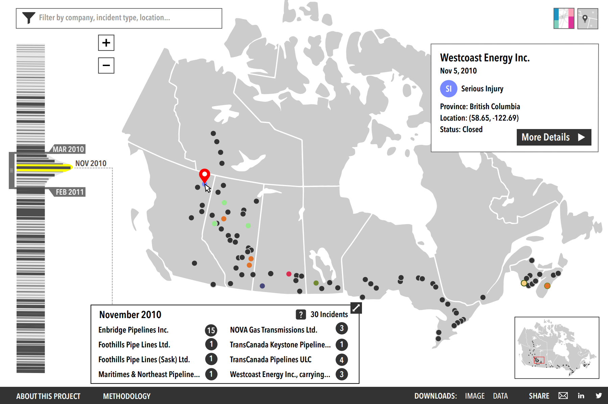

Pipeline Incidents

role
Data Visualization Designer
Interaction Designer
timeline
6 months (2017/04 - 2017/12)
tools
Adobe Illustrator
Adobe InDesign
Tableau
Paper Prototypes
Invision
about
Pipeline Incidents is an interactive data visualization featuring open data from National Energy Board-regulated pipelines. It is based around a parallel coordinates visualization that allows for unlimited customization and filtering for both an overview and targeted exploration into the dataset.
USER RESEARCH
Exploring the Data
The dataset for this project has 1112 incidents that occurred on NEB-regulated pipelines. Each individual incident has various aspects related to it such as location, company, what happened, substance released, reported date, and so forth.
Our initial exploration for data understanding involved manipulating the data with various tools such as Tableau, in order to understand its form and find interesting trends that might be worth highlighting. Collaboration with data experts was a big part of this project as the stories behind the data were not immediately clear without extra background context.
Collaboration with data experts was a big part of this project as the stories behind the data were not immediately clear without extra background context. Our initial exploration for data understanding involved manipulating the data with various tools such as Tableau.
IDEATION
Visualizing Location Data
We knew early on that location data was important for this visualization because it provides a familiar grounding to understand the incidents from a layperson’s perspective. Another direction that we explored was timeline driven selections for similar reasons. Of course, we didn’t want to restrict ourselves to this and explored a vast contrast of different ideas, as evident in our design wall from weeks of exploration.

Location iteration
I tried to incorporate the map and timeline idea to create an interface where users can use these as controls to browse and filter down to specific incidents. I created this mockup of my timeline+map vis to communicate my idea to the team. However, after presenting it, we decided that we wanted something that dug deeper into the data as map driven exploration narrowed the possibilities of the dataset too much.
I learned a valuable lesson here about the benefits of low fidelity mockups and quick iterations. I had spent a week creating a polished mockup but we ultimately ended up moving away from this idea. I had become proud of my work even though it was not the greatest idea. However In the end, some of these concepts came back so the effort wasn’t entirely wasted.
OUTCOMES
Launching and Demos
NEB Launch Party
After the first version of the visualization was launched, we had a chance to showcase it to various NEB staff as well as the general public. We had a launch party involving an assortment of NEB staff from data analysts who work regularly with the data, to engineers working in the field.

TEDx Calgary
We also had a chance to showcase the visualization at 2017 TEDx Calgary! It was part of the Interactions exhibit and we had the opportunity to engage with many interested members of the public.
Many people gave good feedback about how this visualization can be a good start in trying to understand pipeline incidents that the media often depicts from a potentially bias perspective. They suggested deeper exploration and links to more details about each incident, showing that our goal of public engagement was definitely on the right track.

next project